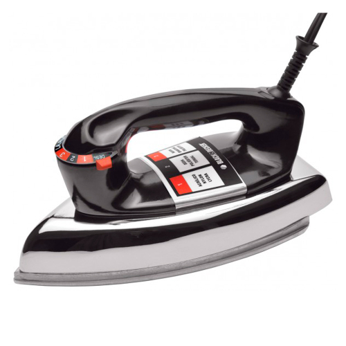

Gazin Atacado
O Gazin Atacado, foi criado no ano de 1996,
e atualmente, é um dos principais negócios da empresa, o Atacado da Gazin é conhecido
como a maior atacadista de eletrodomésticos do Brasil. O setor de televendas na cidade de
Douradina-PR, atende vários lojistas do pais inteiro , eles recebem suas mercadorias sempre com agilidade, pontualidade
e o principal de tudo qualidade, que é o principal objetivo da emrpresa, sempre buscando
o melhor para o cliente. O Gazin Atacado tem 13 Centros de Distribuição pelo Brasil.
Esse setor da emrpresa está em constante evolução, sempre evulindo ano após ano. A empresa vem investindo em
Programas de Acompanhamento e suporte aos lojistas, sempre inovando na variedade de produtos, esses são
alguns dos segredos para o suceso.
Atendimento
O Gazin Atacado realiza treinamentos com
os seus
vendedores e supervisores, os objetivos
desses treinamentos
são melhorar a parte técnica e a
gestão de negócios e equipes.
O propósito desses
treinamentos, ésempre desenvolver cada
vez mais
os funcionários da empresa, e sempre buscar o melhor.

Esses são alguns dos produtos mais
vendidos do Atacado
| Produto |
ESPREMEDOR MONDIAL
FRUTAS TURBO CITRUS |
| Marca |
Mondial |
| Modelo |
Turbo Citrus E-01 |
| Tipo |
Espremedor de frutas |
| Capacidade |
1,2 litros |
| Velocidades |
1 velocidades |
| Acionamento automático |
Por pressão |
| Portas-fios |
Sim |
| Produto |
FERRO B&D AUTOMATICO
SECO VFA1110 PRETO |
| Marca |
Black & Decker |
| Modelo |
VFA1110 |
| Tipo |
Ferro a seco |
| Base |
Alumínio polido |
Seletor
de temperatura |
Sim |
Reservatório
de água |
Não |
Luz indicadora
de funionamento |
Não |
| Autolimpante |
Não |
Indicador de
nível de água |
Não |
| Produto |
Celular Samsung Galaxy
A05 128GB SM-A055M/DS |
| Marca |
Samsung |
| Modelo |
SM-A055M |
| Linha |
A |
| Série |
A05 |
Tamanho da
tela |
6.7" |
Tecnologia da
tela |
PLS LCD |

 REF 334L
REF 334L